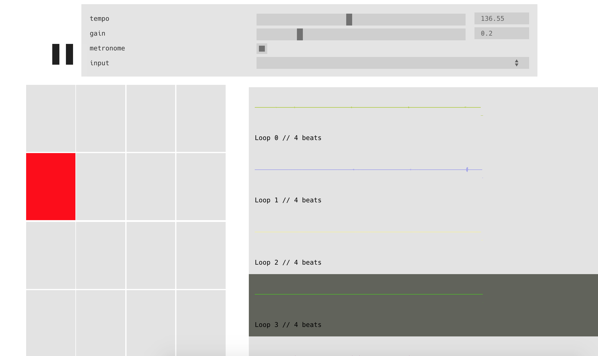

I sometimes feel a sense of mastery when deep in the flow of coding. I’m flying through vim and tmux with hotkeys and shortkeys, techno pumping in my headphones. A sip of coffee, a moment of reflection and back into the matrix.
I want to evoke a similar feeling when making music. I think that the key is finding the right balance between artistry and power. Without artistry you can make perfect compositions without any heart or feeling. Without power you are strumming an electric guitar that isn’t plugged in to anything.
First, some examples that push too far either way. The demos for the Zen Audio ALK2 are clearly amazing. The software interface is intuitive, it allows VST plugins and even has escape hatches to substitute pre-recorded loops with the “Panic” button. But it’s just too powerful. The balance has been upset and too much of the artistry has been rendered obselete.
As for having too little power, the obvious example is the classic guitar loop pedal. My old one had a single on/off looping function. You can lay down a bassline or chord progression then noodle over the top, but it doesn’t open up the infinite universes of a more powerful setup.
In my opinion Ableton (Live and Push combined) has found the best balance of the options out there. The deep integration between the hardware controller and fully-featured DAW software have opened up a new type of music making. The use of samples, sequencing and live-looping feels organic in the hands of skilled users.
One marker of mastery of an art is pushing the boundaries by creating new forms. I think Ableton will be the ones credited with pushing the boundaries of live looping.
My new project now has a clear goal: Strike the right balance between power and artistry while shedding the complexity built into DAW interfaces. The UI should be a set of configuration options then become a dashboard displaying the state that’s controlled by MIDI controllers.
For posterity, this is how it looks after a week:

A ways to go yet.